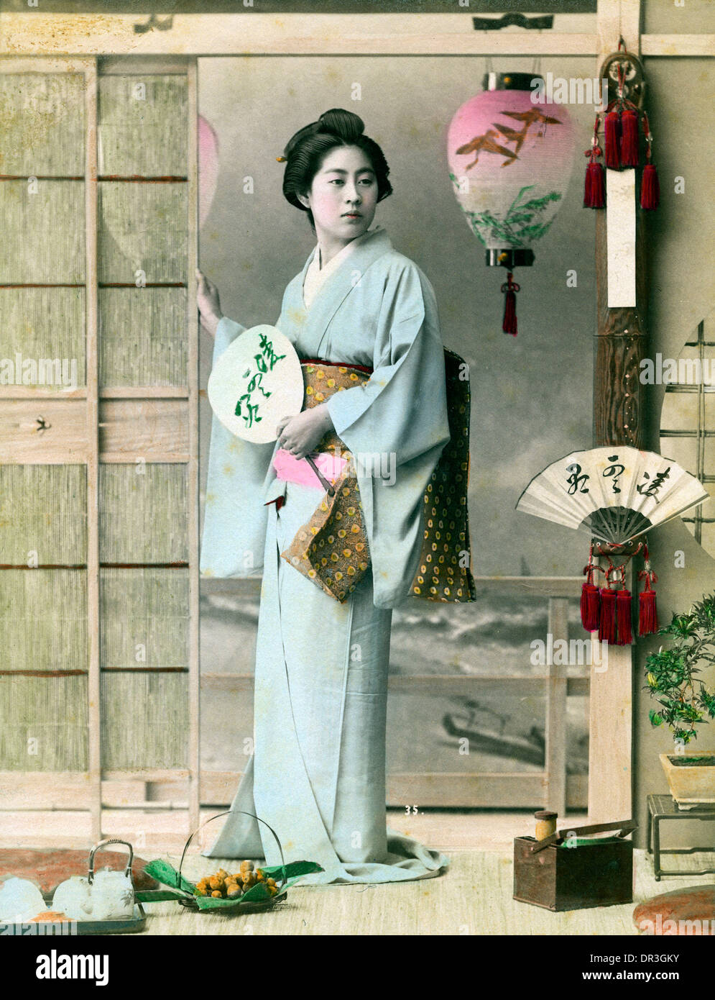

Traditions and Culture of Japan
Japan is special because it keeps its old traditions while also being very modern.

Customs
- Bowing to greet people
- Taking off shoes inside the home
- Being quiet on public transport
Steps of the Tea Ceremony
- The guests enter the tea room
- The host prepares the matcha
- The guests drink the tea and thank the host
Festivals
| Festival | Time of Year |
|---|---|
| Oshogatsu (New Year) | January |
| Hanami (Cherry Blossoms) | Spring |
| Obon | August |